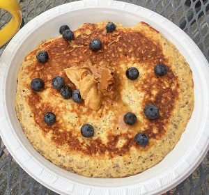
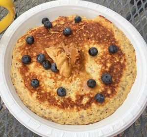

The Vegan Diet
Based on an article written by Alina Petre, MS, RD (CA) on November 1, 2016 The vegan diet has become very popular. Increasingly more people have decided to go vegan for ethical, environmental or health reasons. When done right, such a diet may result in various health benefits, including a trimmer waistline and improved blood sugar control. Nevertheless, a diet based exclusively on plant foods may, in some cases, increase the risk of nutrient deficiencies. This article is a detailed beginner's guide to the vegan diet. It aims to cover everything you need to know, so you can follow a vegan diet the right way.
What is the Vegan Diet?
Veganism is defined as a way of living that attempts to exclude all forms of animal exploitation and cruelty, whether for food, clothing or any other purpose. For these reasons, the vegan diet is devoid of all animal products, including meat, eggs and dairy. People choose to follow a vegan diet for various reasons. These usually range from ethics to environmental concerns, but they can also stem from a desire to improve health.
Plant-base or non-animal protein
There are many diferent foods that contein protein without having to eat meat. As we age, protein is important for keeping up muscle mass to stay active, avoid injury, and support a healthy immune system. Choosing non-meat proteins in later years can be a good idea for more than just health or ethical reasons. “Many non-meat protein sources are lower in cost, and if you’re on a fixed income, then watching the food budget can be helpful,” says Angela Catic, MD, an assistant professor of internal medicine at Baylor College of Medicine. Dental problems like missing teeth and dentures can come into play, too -- making a piece of steak or hamburger hard to chew. But there are plenty of ways to get protein besides meat. You just have to know what you’re looking for. Soy milk, almond milk, beans, tofu, nuts, whole grains Researches have shown that a vegan diet can help do the following: Promote weight loss. Reduce your risk of heart disease by lowering cholesterol levels. Lower your chances of getting certain types of cancer, such as colon cancer. Health


Different Types of Vegan Diets
I am under a Whole-food vegan diet. Though acording to these articles, there are different varieties of vegan diets. The most common include: Whole-food vegan diet: A diet based on a wide variety of whole plant foods such as fruits, vegetables, whole grains, legumes, nuts and seeds. Raw-food vegan diet: A vegan diet based on raw fruits, vegetables, nuts, seeds or plant foods cooked at temperatures below 118°F (48°C) (1). 80/10/10: The 80/10/10 diet is a raw-food vegan diet that limits fat-rich plants such as nuts and avocados and relies mainly on raw fruits and soft greens instead. Also referred to as the low-fat, raw-food vegan diet or fruitarian diet. The starch solution: A low-fat, high-carb vegan diet similar to the 80/10/10 but that focuses on cooked starches like potatoes, rice and corn instead of fruit. Raw till 4: A low-fat vegan diet inspired by the 80/10/10 and starch solution. Raw foods are consumed until 4 p.m., with the option of a cooked plant-based meal for dinner. The thrive diet: The thrive diet is a raw-food vegan diet. Followers eat plant-based, whole foods that are raw or minimally cooked at low temperatures. Junk-food vegan diet: A vegan diet lacking in whole plant foods that relies heavily on mock meats and cheeses, fries, vegan desserts and other heavily processed vegan foods. Although several variations of the vegan diet exist, most scientific research rarely differentiates between different types of vegan diets. Therefore, the information provided in this article relates to vegan diets as a whole.
For more details:Click here 
